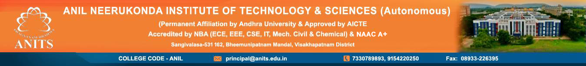

- HOME
- ABOUT US
- ADMISSIONS
- ACHIEVEMENTS
- DEPARTMENTS
- R & D CELL
- IQAC
- TRAINING & PLACEMENTS
- CENTRAL LIBRARY
- FACILITIES
- POLICIES
- ALUMINI
- NBA
- NAAC
- NIRF
- IIC
- E-LEARNING
- ONLINE GRIEVANCE
- CONTACT US
- LOGIN
DEPARTMENT OF COMPUTER SCIENCES AND ENGINEERING
The Department of Comouter sciences and Engineering was started with UG programme in 20008 with an intake of 210 and subsequently to 30 in 2020. PG programme (M.Tech) in Food Processing Technology with an intake of 9 has been sanctioned by AICTE from the academic year 2021-22. The Department of Computer sciences and Engineering at ANITS boasts of a very efficient team of faculty with 6 doctorates from renowned institutes like IISc, IITs and AU. The department is well equipped with Chemical Engineering laboratories and has the equipment for inter-disciplinary research especially in the fields of Environmental and Biotechnology. The students of Chemical Engineering were successfully placed in reputated industries.
The Department of Computer Science Engineering (CSE) at Anits has a history of steady growth, offering a range of programs and focusing on developing skilled professionals in the field. The department emphasizes academic practices, professional conduct, and student development, including orientation programs and counseling. It has also been recognized for its strong placement record and student achievements.
Key aspects of the CSE department's history and development:
Growth and Resources:
The department has seen growth in faculty, laboratories, and facilities, ensuring a conducive learning environment.
Faculty Expertise:
It boasts a team of qualified teachers, including experienced researchers, under the leadership of Dr. Suresh Chandra Satapathy.
Program Offerings:
The department offers various programs, likely including B.Tech in Computer Science and Engineering, catering to diverse student interests.
Emphasis on Student Development:
Orientation programs and counseling support students in their academic and professional journeys.
Academic Excellence:
The department consistently achieves high pass percentages and has received awards for student performance.
Placement Success:
ANITS has a strong record of campus placements, with many graduates securing job offers in IT and non-IT companies.
Student Associations:
The ANITS CSI Student Branch has been recognized for its excellence.
Faculty Contributions:
Faculty members have contributed to research publications and international conferences.
Accreditations:
ANITS, including the CSE department, is accredited by various bodies, including NBA and NAAC, indicating high quality standards.